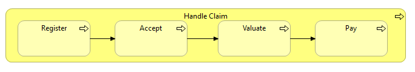
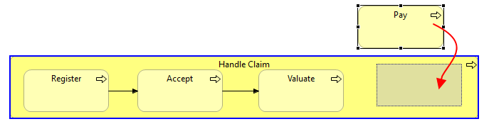
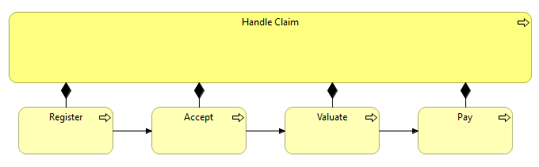
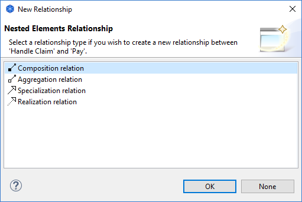
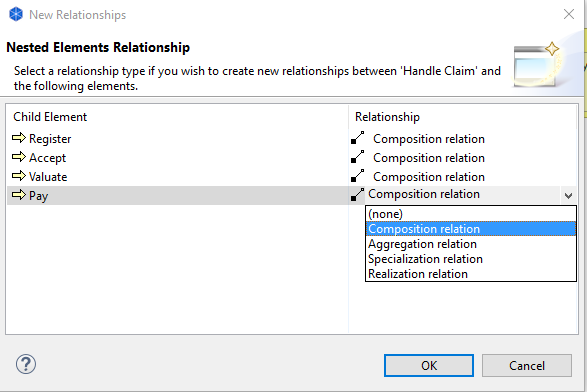

Each graphical element (except for notes and junctions) can act as a container element for other elements. Dragging and dropping an element inside of another element means that it becomes a child of the parent element. This is useful to represent containment type relationships such as Composition, Aggregation, and Association or for convenient grouping.
In the following screenshot the elements "Register", "Accept", "Valuate" and "Pay" are child elements of the parent "Handle Claim Process" element:
Child elements contained by a parent element
While dragging elements into or over other elements a visual cue is provided to indicate that the dragged element will be moved into the parent (container) element. This is a blue highlight around the target element as the element is dragged over it:
A Child Element being Dragged into a Container Element. The Container highlighted in blue
The ArchiMate specification states that some relationships may also be expressed by nesting the model elements. That is to say, an explicit connection need not be drawn between the parent and child elements but that it may be represented as a container nesting of elements.
Archi supports this convention with Automatic Relationship Management (ARM). This system ensures that relationships are automatically created and hidden between qualifying parent/child elements. The system can be configured to suit the user's needs. See Preferences to configure the ARM.
The best way to explain the Automatic Relationship Management system (ARM) is by an example.
Suppose the user has a Business Process element named "Handle Claim Process" that will act as a container element ("parent") for four sub-processes, "Register", "Accept", "Valuate" and "Pay". The relationship between the parent process and the sub-processes would normally be expressed as four Composition relationships. These can be drawn conventionally using connecting lines as follows:
Composition relationship between parent and child processes
However, this is visually not as clear as if the sub-processes were placed inside of the container parent process.
We can solve this problem by enabling the ARM system in Preferences. This ensures that when the sub-processes are placed in the parent element the connections are hidden in the View, but are still present in the actual semantic model. Dragging the child elements in and out of the parent element hides and shows the explicit relationships. The hidden connections are "implicit" connections.
The Connections now hidden from the View
Adding new elements to a parent element in a View from the Palette or dragging and dropping from the Model Tree results in a dialog box asking if a new relationship should be created between the parent and child elements:
Dialog to create a new nested relationship
Note that the dialog will only display valid relationships between the parent and child elements, and only those that are specified in Preferences. Valid relations between the child and parent elements can also be selected. These are shown as "(reverse)".
If you do not wish to create a new relationship, select "None".
If more than one element is moved (drag and drop operation) to a parent element in a View or is dragged and dropped from the Model Tree onto a parent element, and there are no existing preferred relationships between the parent and the child elements then a dialog box is displayed offering to create new relationships between the parent element and the child elements. You can choose a different type of relationship for each child element:
Dialog for creating more than one relationship
If you do not wish to create a new relationship for an element, select "(none)" from the drop-down combo box. To select the same type of relationship in the drop-down combo-box, hold down the Ctrl / Command key and select.